一、开发环境的搭建
（1）apache+php+mysql环境搭建
因为要用apache来做服务器，mysql作为数据库来存储数据，php来写代码以此实现网页与数据库的交互数据，所以需要下载上述软件，但上述软件的安装环境、配置很麻烦，所以在这里用了一个功能强大的建站集成软件包---XAMPP
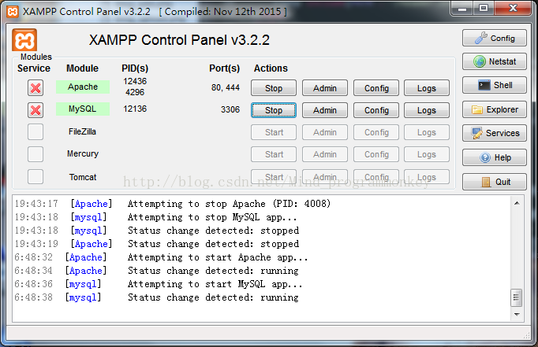
当然，也有可能启动Apache时候出现错误。
（2）数据库客户端软件navigat
直接在cmd命令控制台操作数据库并不方便，不够直白，当然也可以直接用phpmyadmin来操作（上述xampp软件包安装之后在游览器输入127.0.0.1/phpmyadmin即可打开），但是phpmyadmin来操作也不方便，这里便采用Oracle公司出品的数据库客户端Navicat
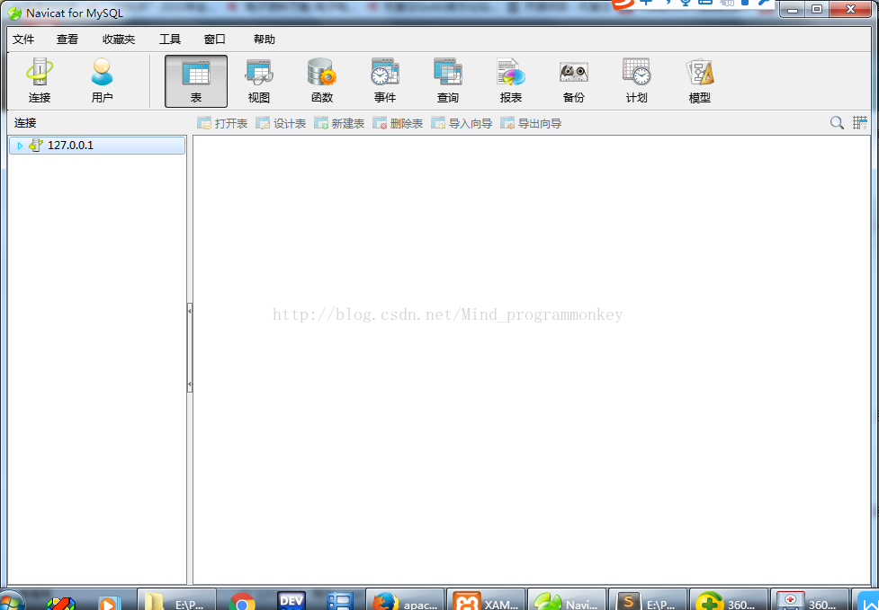
点击连接，输入连接名，（这里我直接取了IP地址的名字127.0.0.1），主机名和端口号都不用变，这里的用户名和密码。如果是你用的是xampp，那么用户名是root，密码为空；如果不是用的是xampp安装的，按照你设置的用户名和密码登录即可。填写完毕之后点击连接测试，没有问题直接确定即可连接好数据库。
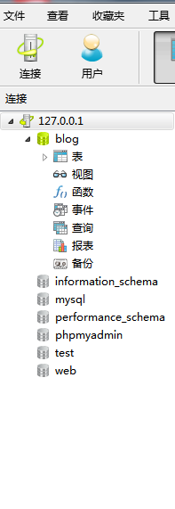
此外你要是想掌握数据库，简单来讲你想对数据库的任何操作，都必须操作sql语句，总的来说分为四个操作：增删改查。
①增：向数据库写入数据
语句：insert into users (`username`,`password`) values ('name','passwd')
（ps新手一定要注意这离users这个数据表后面的``这个符号是在tab键上方的引号，而values后面的就是个单引号）
②删：删除已有数据
语句：delete from users WHERE id='3'
③改：修改数据
语句：update set users username='新值', password='新值' WHERE id=3
④查：从数据库读取数据
语句：select * from users where id>1 order by id desc limit 0,2
（3）html网页的编写工具sublime text
phper在进阶的时候总会遇到一些问题和瓶颈，业务代码写多了没有方向感，不知道该从那里入手去提升，对此我整理了一些资料，包括但不限于：分布式架构、高可扩展、高性能、高并发、服务器性能调优、TP6，laravel，YII2，Redis，Swoole、Kafka、Mysql优化、shell脚本、Docker、微服务、Nginx等多个知识点高级进阶干货需要的可以免费分享给大家，需要的（点击→）我的官方群677079770
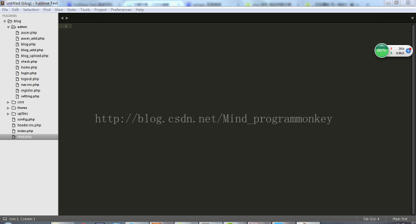
Sublime Text 是一个代码编辑器（Sublime Text 2是收费软件，但可以无限期试用），也是HTML和散文先进的文本编辑器。Sublime text具有漂亮的用户界面和强大的功能，非常适合写代码的程序猿。
用sublime text来写网页代码，可以掌握这样一个小技巧，先新建一个文件，格式保存为html网页格式，然后在sublime text中打开，输入html:4s 然后按下tab键即可生成大体框架。当然这个快捷键要想使用是要按照我上述给的链接，按照步骤安装好Emmet这个插件，才能使用。
（4）网站域名的配置
一般来讲，你在游览器打开127.0.0.1这个网址，会转到apache默认目录下的一个网址，这里我对其进行修改，修改为我做项目的目录，E:\PHP\xampp\apache\conf，打开httpd.conf文件，将里面的路径修改为你存储网站的目录，在这里我的修改为
DocumentRoot "E:/php/xampp/workplace"
<Directory "E:/PHP/xampp/workplace">
这里要注意按照自己的下载按照路径来修改为自己的目录，其次我还对这个127.0.0.1这个网址再次做了修改，使其虚拟域名为blog.com，修改完之后重启之后，在游览器输入blog.com，便会出现下述场景：
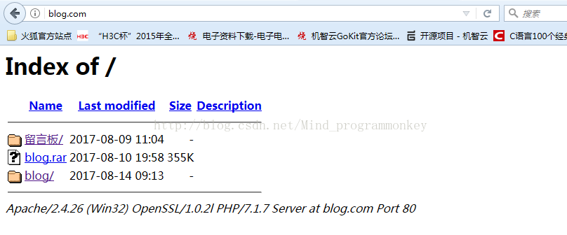
在这里我发现我修改的DNS配置，不知道何时再前面加了一条注释，导致没法打开，大家也要注意按照我给的连接配置好之后，如果打不开再看一下配置文件有无错误。
总之，配置环境和工具基本上也搭建成功了，接下来我就开始讲解这个blog的项目。
二、博客网站的书写
1.总体框架
首先在这里我先介绍一下我的总体框架，讲解一下，让大家先熟悉一下。
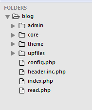
blog是项目的名字，admin文件夹里面存储的是后台登录文件 core文件夹里面存储核心文件，theme文件夹存储网页的样式文件 upfiles文件夹是存储从本地上传到服务器的图片信息，之后config.php文件是整个博客网站的配置文件，header.inc.php是加载了一个页面样式信息，index.php文件是网站的首页，read.php文件是网站首页文章的具体链接。
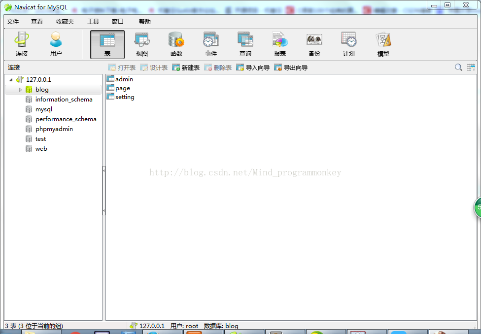
数据库表中的设计在这里我给出，方便大家参考学习，这里我主要建立了三个表，admin这个表示用来存储后台管理员注册和登录的数据，即账户和密码：
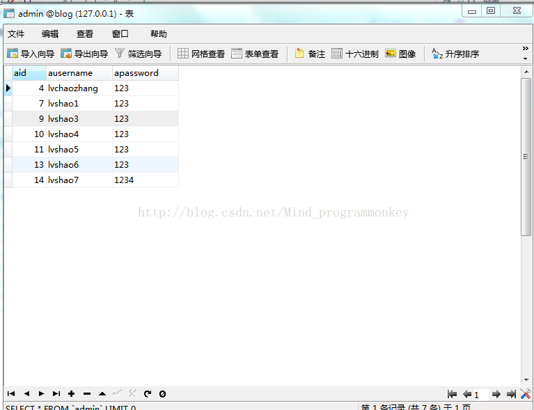
page这个表主要是用来存储博客信息，在这里也给图片，方便安装图来建表：
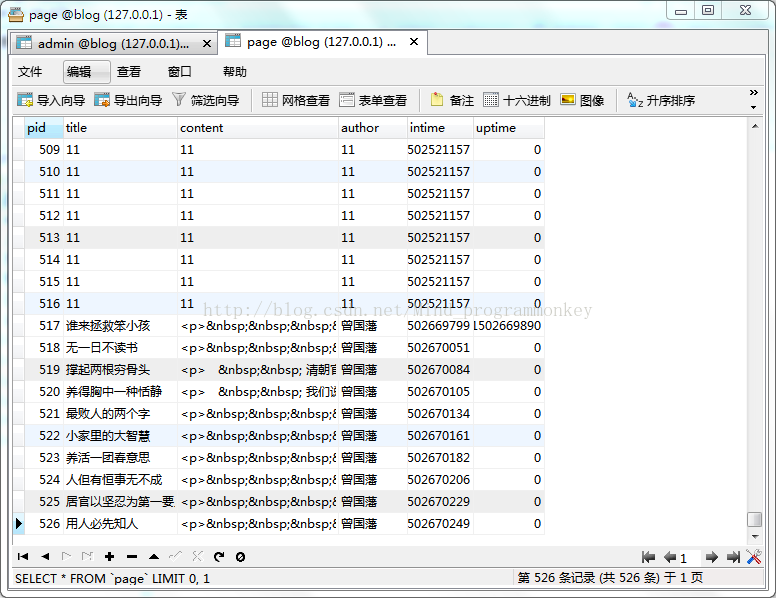
最后给出setting这个表，主要是用来存储博客的系统设置：
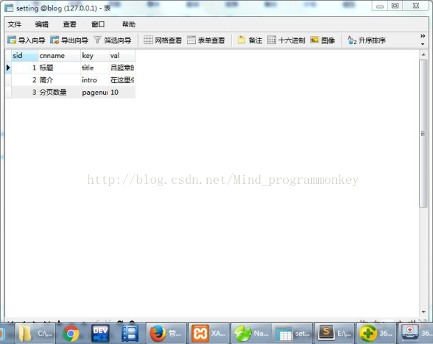
2.网站后台admin的书写
（1）登录界面（login.php）
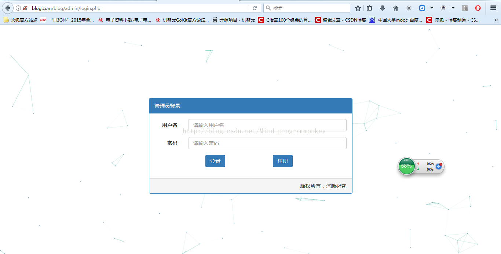
关于这个页面我会在这里给出源码，登录页面其实也就是个从数据库读取的过程，这个登录页面的设计我主要是采用了bootstrap来设计的，不明白的可以百度一下bootstrap
在这里面它包含了各式的样式、组件和JavaScript插件，可以说很好用。
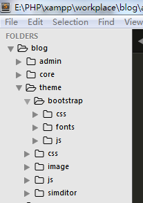
在这里我的使用方法是将bootstrap下载下来，然后将文件加压，复制到theme这个文件夹下面，调用方法见下面的源码，在源码中我都给出了详细的解释。
源码：
1 <?php
2 /*
3 后台管理员登录窗口
4 */
5
6 /*启动session服务，记录账号登录的cookies*/
7 session_start();
8
9 /*包含一个配置文件*/
10 include('../config.php');
11
12
13 if($input->get('do')=='check'){
14 /*获取页面提交的用户名和密码数据*/
15 $ausername=$input->post('ausername');
16 $apassword=$input->post('apassword');
17
18 /*查询页面提交的数据是否在数据库提供的数据存在的sql语句*/
19 $sql="select * from admin where ausername='{$ausername}' and apassword='{$apassword}' ";
20 /*数据库查询语句返回结果*/
21 $mysqli_result=$db->query($sql);
22 /*以数组形式存储数据库查询语句的返回结果*/
23 $row=$mysqli_result->fetch_array( MYSQLI_ASSOC);
24 /*如果row确实返回了结果，则将结果的aid存储在session里，并转向home.php文件*/
25 if(is_array($row)){
26 $_SESSION['aid']=$row['aid'];
27 header("location:home.php");
28 }else{
29 echo("账户或密码错误");
30 }
31 }
32 ?>
33
34 <!--后台管理员登录界面></!-->
35 <!DOCTYPE HTML PUBLIC "-//W3C//DTD HTML 4.01//EN" "http://www.w3.org/TR/html4/strict.dtd">
36 <html lang="en">
37 <head>
38 <meta http-equiv="Content-Type" content="text/html;charset=UTF-8">
39 <title>管理员登录界面</title>
40 <!--加载包含bootstrap里css和javascript里的文件></!-->
41 <?php include(PATH . '/header.inc.php');?>
42
43
44 </head>
45 <body>
46 <!--最外面的container容器></!-->
47 <div class="container">
48 <!--bootstrap使用时建议使用一个row表格类，包含12个列></!-->
49 <div class="row" style="margin-top:200px;">
50 <!--距左边3个列></!-->
51 <div class="col-md-3"></div>
52 <!--中间部分占据6列></!-->
53 <div class="col-md-6" ">
54
55 <div class="panel panel-primary">
56 <!--登录头部分></!-->
57 <div class="panel-heading">管理员登录</div>
58 <!--登录的身体部分></!-->
59 <div class="panel-body">
60
61 <form class="form-horizontal" action="login.php?do=check" method="post">
62 <!--登录的用户名那一行></!-->
63 <div class="form-group">
64 <label for="inputEmail3" class="col-sm-2 control-label">用户名</label>
65 <div class="col-sm-10">
66 <input type="text" class="form-control" name="ausername" id="ausername" placeholder="请输入用户名" datatype="*3-10" errormsg="请输入长度 范围在3-10之间的昵称">
67 </div>
68 </div>
69
70 <!--登录的密码那一行></!-->
71 <div class="form-group">
72 <label for="inputEmail3" class="col-sm-2 control-label">密码</label>
73 <div class="col-sm-10">
74 <input type="password" class="form-control" name="apassword" id="apassword" placeholder="请输入密码">
75 </div>
76 </div>
77
78 <!--登录、注册那一行></!-->
79 <div class="form-group">
80 <div class="col-sm-3"></div>
81 <!--登录></!-->
82 <div class="col-sm-4">
83 <input type="submit" value="登录" class='btn btn-primary'>
84 </div>
85 <!--注册></!-->
86 <div class="col-sm-4">
87 <a href="register.php"><input type="button" value="注册" class="btn btn-primary"> </a>
88 </div>
89 </div>
90 </form>
91
92
93
94 </div>
95 <!--登录的尾部分></!-->
96 <div class="panel-footer text-right">版权所有，盗版必究</div>
97 </div>
98
99 </div>
100 <!--距离右边三列></!-->
101 <div class="col-md-3"></div>
102 </div>
103 </div>
104 <!--窗口背景的script加载></!-->
105 <script type="text/javascript">
106 window.onload = function() {
107 var config = {
108 vx : 4,
109 vy : 4,
110 height : 2,
111 width : 2,
112 count : 100,
113 color : "121, 162, 185",
114 stroke : "100, 200, 180",
115 dist : 6000,
116 e_dist : 20000,
117 max_conn : 10
118 }
119 CanvasParticle(config);
120 }
121 </script>
122 <script type="text/javascript" src="../theme/js/canvas-particle.js"></script>
123 </script>
124 </body>
125 </html>（2）注册界面(register.php)
注册界面其实也就是个往数据库增加数据的过程。
还是给出源码，源码中我给出了详解。
1 <?php
2 /*包含一个配置文件*/
3 include('../config.php');
4
5 if($input->get('do')=='check'){
6 /*获取用户页面注册传来的用户名和密码数据*/
7 $ausername=$input->post('ausername');
8 $apassword=$input->post('apassword');
9 $aconfirmpassword=$input->post('aconfirmpassword');
10 /*注册时的处理*/
11 if($apassword!=$aconfirmpassword){
12 echo "前后两次输入的密码不一致";
13 exit;
14 }
15 /*将用户填入的数据插入到数据库的sql语句*/
16 $sql="INSERT INTO admin(`ausername`,`apassword`) values('$ausername','$apassword')";
17 /*提交sql语句到数据库处理*/
18 $is=$db->query($sql);
19 /*判断是否注册成功*/
20 if($is){
21 echo "注册成功";
22 header("Location:login.php");
23 }else{
24 echo "注册失败";
25 }
26 }
27
28
29 ?>
30
31
32
33 <!--后台管理员登录界面></!-->
34 <!DOCTYPE HTML PUBLIC "-//W3C//DTD HTML 4.01//EN" "http://www.w3.org/TR/html4/strict.dtd">
35 <html lang="en">
36 <head>
37 <meta http-equiv="Content-Type" content="text/html;charset=UTF-8">
38 <title>管理员注册界面</title>
39 <!--加载包含bootstrap里css和javascript里的文件></!-->
40 <?php include(PATH . '/header.inc.php');?>
41
42 </head>
43 <body>
44 <!--最外面的container容器></!-->
45 <div class="container">
46 <!--bootstrap使用时建议使用一个row表格类，包含12个列></!-->
47 <div class="row" style="margin-top:200px;">
48 <!--距左边3个列></!-->
49 <div class="col-md-3"></div>
50 <!--中间部分占据6列></!-->
51 <div class="col-md-6" ">
52
53 <div class="panel panel-primary">
54 <!--注册头部分></!-->
55 <div class="panel-heading">管理员注册</div>
56 <!--注册的身体部分></!-->
57 <div class="panel-body">
58
59 <form class="form-horizontal" action="register.php?do=check" method="post">
60 <!--注册的用户名那一行></!-->
61 <div class="form-group">
62 <label for="inputEmail3" class="col-sm-2 control-label">用户名</label>
63 <div class="col-sm-10">
64 <input type="text" class="form-control" name="ausername" id="ausername" placeholder="请输入用户名">
65 </div>
66 </div>
67
68 <!--注册的密码那一行></!-->
69 <div class="form-group">
70 <label for="inputEmail3" class="col-sm-2 control-label">密码</label>
71 <div class="col-sm-10">
72 <input type="password" class="form-control" name="apassword" id="apassword" placeholder="请输入密码">
73 </div>
74 </div>
75 <!--注册的密码确定那一行></!-->
76 <div class="form-group">
77 <label for="inputEmail3" class="col-sm-2 control-label">确认密码</label>
78 <div class="col-sm-10">
79 <input type="password" class="form-control" name="aconfirmpassword" id="aconfirmpassword" placeholder="请再次输入密码">
80 </div>
81 </div>
82
83 <!--提交注册那一行></!-->
84 <div class="form-group">
85 <div class="col-sm-4"></div>
86 <div class="col-sm-6">
87 <input type="submit" value="注册" class='btn btn-primary btn-lg btn-block'>
88 </div>
89 </div>
90 </form>
91
92
93
94 </div>
95 <!--登录的尾部分></!-->
96 <div class="panel-footer text-right">版权所有，盗版必究</div>
97 </div>
98
99 </div>
100 <!--距离右边三列></!-->
101 <div class="col-md-3"></div>
102 </div>
103 </div>
104 <!--窗口背景的script加载></!-->
105 <script type="text/javascript">
106 window.onload = function() {
107 var config = {
108 vx : 4,
109 vy : 4,
110 height : 2,
111 width : 2,
112 count : 100,
113 color : "121, 162, 185",
114 stroke : "100, 200, 180",
115 dist : 6000,
116 e_dist : 20000,
117 max_conn : 10
118 }
119 CanvasParticle(config);
120 }
121 </script>
122 <script type="text/javascript" src="../theme/js/canvas-particle.js"></script>
123 </script>
124 </body>
125 </html>（3）后台管理页面（home.php）
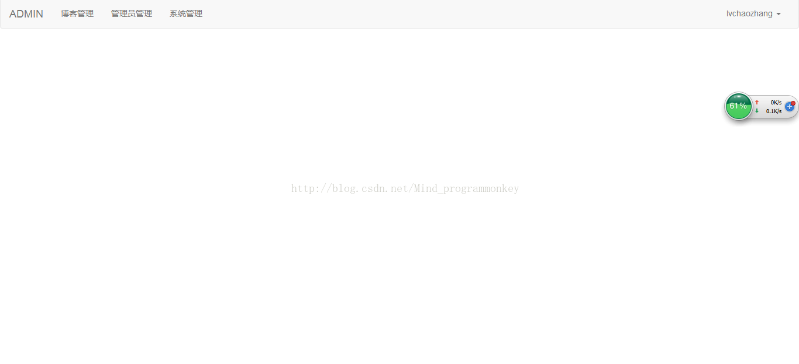
在源码中将上述网站的标题那部分单独给拿出来做了一个文件（nav.inc.php）,这里也是给出源码，供大家学习参考。
home.php源码
1 <?php
2 /*
3 后台管理员登录之后php控制端
4 */
5 include ('check.php');
6 ?>
7
8 <!--后台管理员登录之后的界面<>/!-->
9 <!DOCTYPE HTML PUBLIC "-//W3C//DTD HTML 4.01//EN" "http://www.w3.org/TR/html4/strict.dtd">
10 <html lang="en">
11 <head>
12 <meta http-equiv="Content-Type" content="text/html;charset=UTF-8">
13 <title>管理员登录</title>
14 <?php include(PATH . '/header.inc.php');?> <!--所有的页面都需加载这个文件></!-->
15 </head>
16 <body>
17 <?php include('nav.inc.php');?> <!--管理员登录页面的标题部分></!-->
18 </body>
19 </html>nav.inc.php
1 <!--后台管理界面的上方标题></!-->
2 <nav class="navbar navbar-default" role="navigation">
3 <div class="container-fluid">
4 <!-- Brand and toggle get grouped for better mobile display -->
5 <div class="navbar-header">
6 <button type="button" class="navbar-toggle collapsed" data-toggle="collapse" data-target="#bs-example-navbar-collapse-1" aria-expanded="false">
7 <span class="sr-only">Toggle navigation</span>
8 <span class="icon-bar"></span>
9 <span class="icon-bar"></span>
10 <span class="icon-bar"></span>
11 </button>
12 <a class="navbar-brand" href="home.php">ADMIN</a>
13 </div>
14
15 <!-- Collect the nav links, forms, and other content for toggling -->
16 <div class="collapse navbar-collapse" id="bs-example-navbar-collapse-1">
17 <ul class="nav navbar-nav">
18 <li ><a href="blog.php">博客管理 <span class="sr-only">(current)</span></a></li>
19 <li><a href="auser.php">管理员管理</a></li>
20 <li><a href="setting.php">系统管理</a></li>
21 </ul>
22
23 <ul class="nav navbar-nav navbar-right">
24
25 <li class="dropdown">
26 <a href="#" class="dropdown-toggle" data-toggle="dropdown" role="button" aria-haspopup="true" aria-expanded="false"> <?php echo $session_user['ausername'];?> <span class="caret"></span></a> <!--输出此时登录的账户名></!-->
27 <ul class="dropdown-menu">
28 <li><a href="logout.php">退出</a></li>
29
30 </ul>
31 </li>
32 </ul>
33 </div><!-- /.navbar-collapse -->
34 </div><!-- /.container-fluid -->
35 </nav> （4）博客管理界面(blog.php）
这里有三个功能，修改、删除、添加博客界面，下面我将单独列出添加博客这个界面
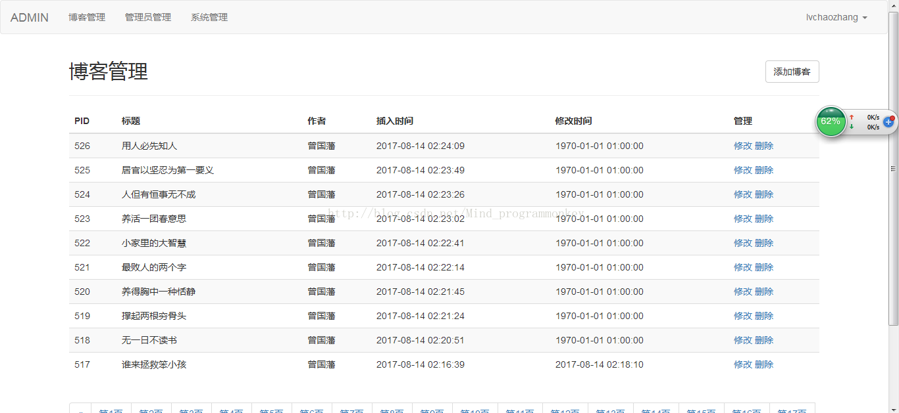
（5）添加博客界面(blog_add.php)
为什么要单独列出添加博客这个界面呢？因为在添加博客这个界面中加载了一个编辑器，一个强大的在线编辑器simditor在这里这个编辑器如果需要图片上传功能的话，需要在文件中设置，这个文件设置为（blog_uopload.php）
blog_add.php源码
1 <?php
2 /*后台除去管理员登录界面，均需加载这个文件，来验证该页面管理员是否登录*/
3 include ('check.php');
4 /*取出传来的pid从而判断是添加还是修改操作*/
5 $pid=$input->get('pid');
6 /*初始化page，为了区别添加还是修改操作*/
7 $page=array(
8 'title' => '',
9 'author' => '',
10 'content' => '',
11 );
12 /*如果pid大于0，可以得出并不是添加操作，而是修改操作*/
13 if($pid>0){
14 $sql="select * from page where pid ='{$pid}' ";
15 $res=$db->query($sql);
16 $page=$res->fetch_array(MYSQLI_ASSOC);
17 }
18
19
20
21 /*对于添加操作操作而言，账户或密码不能为空*/
22 if($input->get('do')=='add'){
23 $title=$input->post('title');
24 $author=$input->post('author');
25 $content=$input->post('content');
26 if(empty($title)||empty($author)||empty($content)){
27 echo("数据不能为空");
28 }
29 /*如果aid大于1，则得出更新操作，否则执行添加操作*/
30 if($pid>0){
31 $uptime=time();
32 $sqlTpl="UPDATE page set title='%s',author='%s',content='%s',uptime='%d' where pid='%d' ";
33 $sql=sprintf($sqlTpl,$title,$author,$content,$uptime,$pid);
34 }
35 else{
36 $intime=time();
37 $sqlTpl="INSERT INTO page(`title`,`author`,`content`,`intime`,`uptime`) values('%s','%s','%s','%d','%d')";
38 $sql=sprintf($sqlTpl,$title,$author,$content,$intime,0);
39
40 }
41 /*判断是否有结果*/
42 $is=$db->query($sql);
43 if($is){
44 header("location:blog.php");
45 }else{
46 echo "执行失败";
47 }
48 }
49 ?>
50
51 <!--管理员添加博客或修改博客的界面<>/!-->
52 <!DOCTYPE HTML PUBLIC "-//W3C//DTD HTML 4.01//EN" "http://www.w3.org/TR/html4/strict.dtd">
53 <html lang="en">
54 <head>
55 <meta http-equiv="Content-Type" content="text/html;charset=UTF-8">
56 <title>添加博客</title>
57 <?php include(PATH . '/header.inc.php');?>
58
59 <!--加载simiditor编辑器的文件></!-->
60 <link rel="stylesheet" type="text/css" href="../theme/simditor/styles/simditor.css" />
61 <script type="text/javascript" src="../theme/simditor/scripts/module.js"></script>
62 <script type="text/javascript" src="../theme/simditor/scripts/hotkeys.js"></script>
63 <script type="text/javascript" src="../theme/simditor/scripts/uploader.js"></script>
64 <script type="text/javascript" src="../theme/simditor/scripts/simditor.js"></script>
65
66 </head>
67 <body>
68 <?php include('nav.inc.php');?>
69 <div class="container">
70 <h2> 博客管理 <small class="pull-right"><a class='btn btn-default' href="blog.php">返回</a></small></h2>
71 <hr/>
72 <div class="rows">
73 <form class="form-horizontal" role="form" action="blog_add.php?do=add&pid=<?php echo $pid;?>" method="post">
74 <div class="form-group">
75 <label for="inputEmail3" class="col-sm-2 control-label">标题</label>
76 <div class="col-sm-6">
77 <input type="text" class="form-control" name="title" placeholder="请输入标题" value='<?php echo $page['title'];?>'>
78 </div>
79 </div>
80 <div class="form-group">
81 <label for="inputPassword3" class="col-sm-2 control-label">作者</label>
82 <div class="col-sm-4">
83 <input type="text" class="form-control" name="author" placeholder="请输入作者" value='<?php echo $page['author'];?>' >
84 </div>
85 </div>
86
87 <div class="form-group">
88 <label for="inputPassword3" class="col-sm-2 control-label">正文</label>
89 <div class="col-sm-8">
90 <textarea id="content" name="content" class="form-control"><?php echo $page['content'];?></textarea>
91 <!--在script中初始化编辑器,在这里注意script里加载的textarea的ID要与上方textarea的id号一致></!-->
92 <script>
93 var editor = new Simditor({
94 textarea: $('#content'),
95 upload:{
96 url:'blog_upload.php',
97 fileKey:'file1'
98 }
99 //optional options
100 });
101 </script>
102 </div>
103 </div>
104
105 <div class="form-group">
106 <div class="col-sm-offset-2 col-sm-6">
107 <button type="submit" class="btn btn-default">提交</button>
108 </div>
109 </div>
110 </form>
111
112 </div>
113 </div>
114 </body>
115 </html>
116 blog_upload.php源码
1 <?php
2 /*后台除去管理员登录界面，均需加载这个文件，来验证该页面管理员是否登录*/
3 include('check.php');
4 /*将文件上传到服务器的目录里*/
5 $key='file1';
6 $dir='../upfiles/';
7 if(isset($_FILES[$key])){
8 $file=$_FILES[$key];
9 if($file['error']==0){
10 /*文件所处服务器的目录*/
11 $pathName=$dir . $file['name'];
12 /*文件所在服务器的网址*/
13 $urlName='http://blog.com/blog/upfiles' . $file['name'];
14 $is=move_uploaded_file($file['tmp_name'], $pathName);
15 /*判断是否移动成功*/
16 if(!$is){
17 die("上传失败");
18 }
19 /*编辑器来判断是否成功上传图片*/
20 $json=array(
21 'success' => true,
22 'msg' => '',
23 'file_path'=>$urlName
24 );
25 echo json_encode($json);
26 }
27 }
28 ?>（6）管理员管理界面（auser.php）
这里还是有三个功能，修改、删除和添加，这里我就不单独一一列出来了，具体可参考文末给出的源码
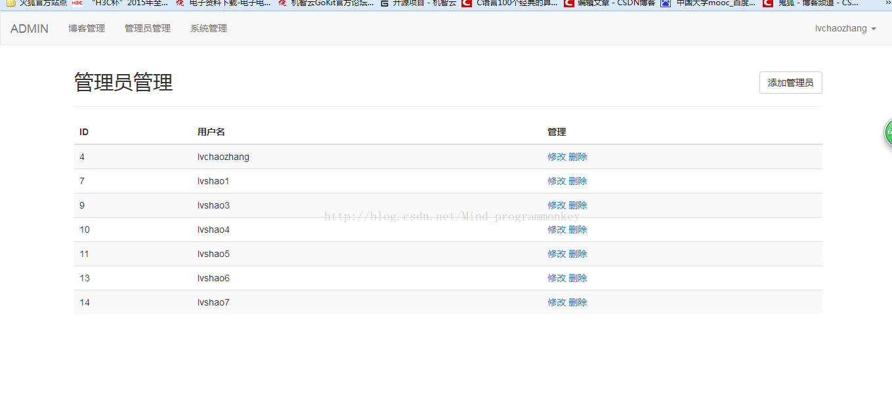
（7）系统管理界面
系统管理可以在这里设置标题、介绍和博客每页的显示数量
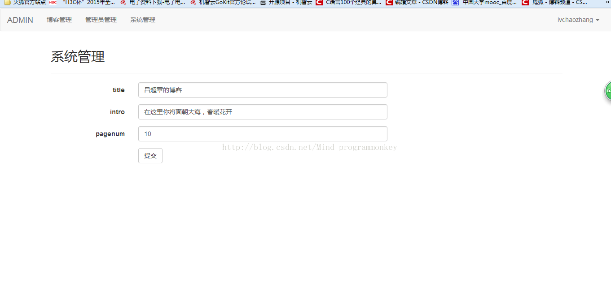
3.主界面（index.php）
这里是游客访问的主界面，这里给出源码大家作为参考，
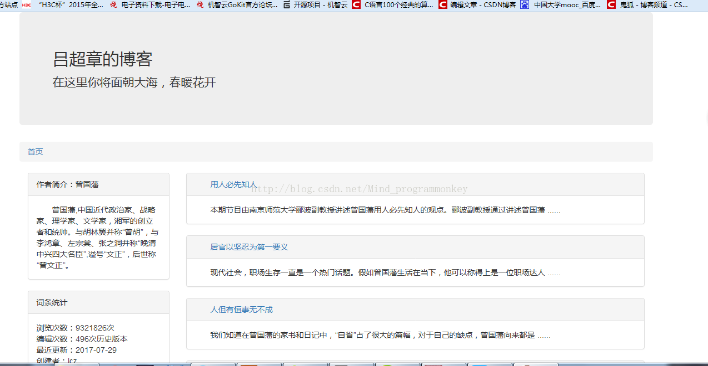
阅读界面（read.php）
当你想阅读该文章时，可点击标题进入阅读页，进行阅读,同样给出源码，作为参考
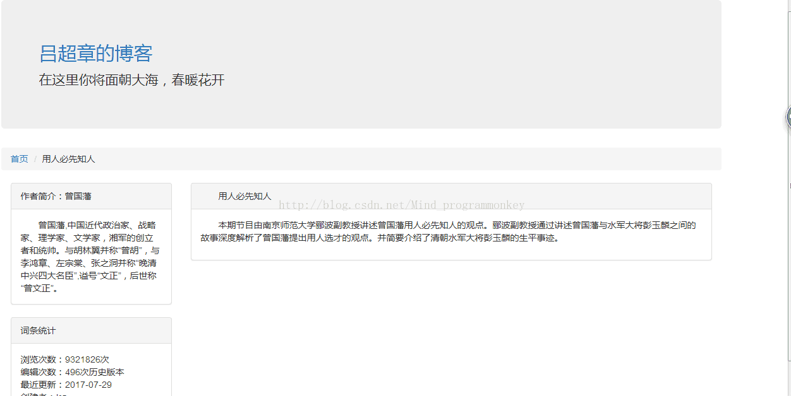
phper在进阶的时候总会遇到一些问题和瓶颈，业务代码写多了没有方向感，不知道该从那里入手去提升，对此我整理了一些资料，包括但不限于：分布式架构、高可扩展、高性能、高并发、服务器性能调优、TP6，laravel，YII2，Redis，Swoole、Kafka、Mysql优化、shell脚本、Docker、微服务、Nginx等多个知识点高级进阶干货需要的可以免费分享给大家，需要的（点击→）我的官方群677079770